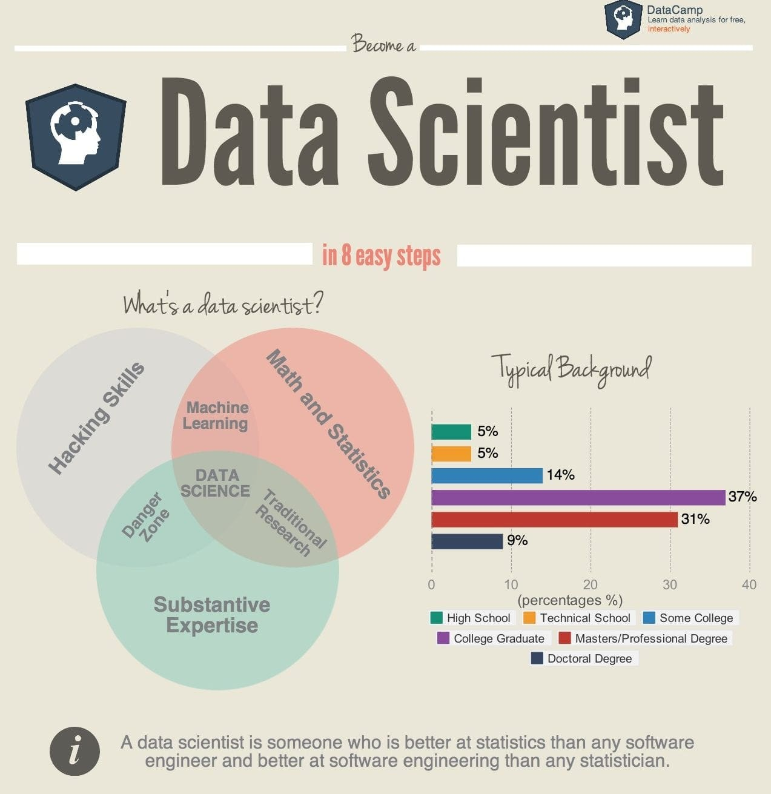
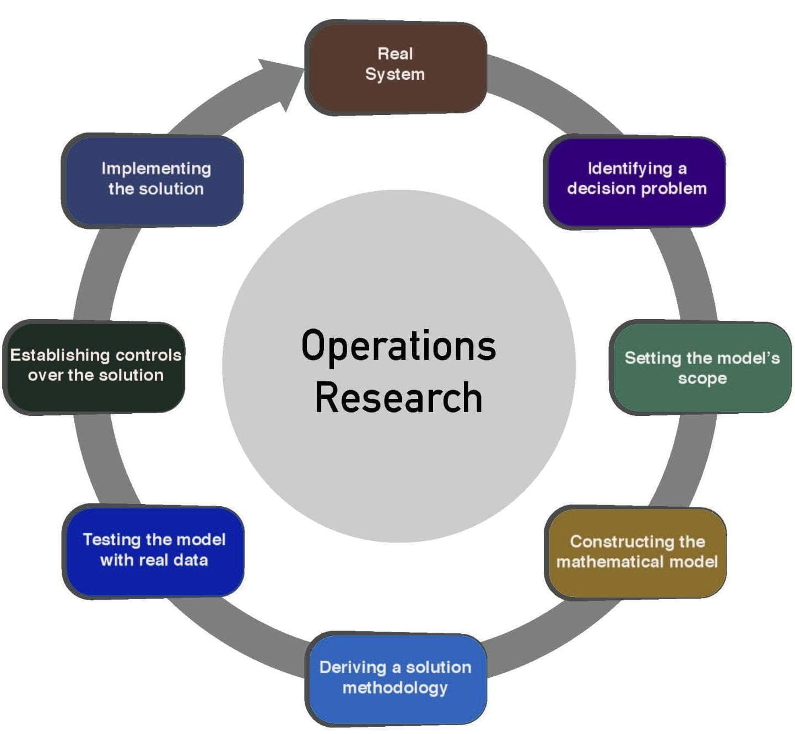

Biologists study organisms, analyze biological systems, conduct experiments, and contribute to scientific knowledge in areas like genetics, ecology, microbiology,
and evolutionary biology, often working in research laboratories, universities, environmental agencies, or healthcare settings.
Chemists study substances, conduct experiments,
and contribute to scientific advancements in various fields, working in laboratories and industries to apply principles of chemistry.
An astronomer is a scientist who studies celestial objects such as stars, planets, galaxies, and the universe as a whole, using observation and analysis to deepen our understanding of the cosmos.
A software developer is a professional who designs, creates, and maintains computer programs and applications,
utilizing coding languages and algorithms to solve specific problems or meet the needs of users and organizations.
An IT worker, is an expert in Information Technology who specializes in the development,
implementation, and maintenance of computer systems, networks, and software,
playing a crucial role in ensuring the effective functioning and security of digital infrastructures within an organization.
Cybersecurity is the practice of protecting computer systems, networks, and data from digital attacks,
unauthorized access, and damage to ensure the confidentiality, integrity, and availability of information.
A civil engineer designs, plans, and oversees the construction and maintenance of infrastructure projects such as buildings,
bridges, roads, and water supply systems to ensure functionality, safety, and compliance with regulations.
A chemical engineer applies principles of chemistry, physics, and mathematics to design, develop, and optimize
processes for the production,
transformation, and utilization of chemicals,
materials, and energy in industries ranging from manufacturing to environmental management.
An electrical engineer designs, develops, and maintains electrical systems and components,
encompassing a wide range of technologies such as power generation, telecommunications, electronics, and control systems.
An actuary uses mathematical and statistical methods to analyze financial risks, assess the impact of uncertain future events,
and help businesses and insurance companies make informed decisions on managing and mitigating those risks.

A data scientist employs statistical analysis, machine learning,
and programming skills to extract meaningful insights from large and complex datasets, aiding businesses in data-driven decision-making and problem-solving.

An operations research analyst utilizes mathematical and analytical methods to optimize decision-making processes,
improve efficiency, and solve complex problems in areas such as logistics, supply chain management, and resource allocation.